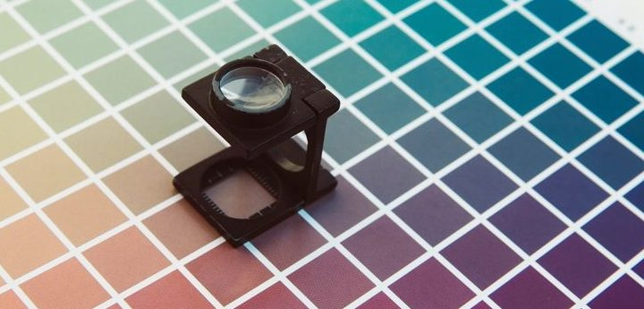

Davetiyenin yanında
Kartvizitten broşüre matbaa işleri
Davetiye için geldiğinizde kartvizitinizi, broşürünüzü ya da el ilanınızı da sorabilirsiniz. Bu sayfadaki ölçü aracı ve dosya rehberi, baskıya hazırlanırken işinizi kolaylaştırır.
Sık sorulan baskı işleri
Aşağıdakiler bir matbaada en çok sorulan işlerdir. Kâğıt, adet ve süsleme seçenekleri işe göre değişir; hangisinin sizin için uygun olduğunu sorun, bilgi verelim.

-
Kartvizit
Mat, parlak ve özel dokulu kâğıtlar; tek ya da çift yüz baskı. Selefon, lak ya da yaldız gibi detaylarla kartınızı öne çıkarabilirsiniz.
Kâğıt ve adet seçeneklerini sorun -
Broşür ve el ilanı
Tek ve çift yön baskı. Katlamalı broşürde ikiye, üçe ya da körük katlama gibi seçenekler vardır; içeriğinize uygun olanı birlikte seçelim.
Katlama ve kâğıt için sorun -
Antetli kâğıt ve kurumsal zarf
Resmî yazışmalarınız için logolu kâğıt ve zarf. Hangi ölçü ve kâğıt seçeneklerinin bulunduğunu sorun, bilgi verelim.
Sorun, bilgi verelim -
Etiket, teşekkür ve masa kartı
Nikâh şekeri etiketi, teşekkür kartı, masa numarası gibi davetinizi tamamlayan küçük baskılar için sorun.
Sorun, bilgi verelim -
Tasarım desteği
Hazır bir dosyanız yoksa metniniz ve logonuzla birlikte hazırlayalım. Elinizde eski bir örnek varsa onu da getirebilirsiniz.
Dosyanız yoksa birlikte hazırlayalım -
Başka bir iş mi?
Listede olmayan bir baskı işiniz varsa ölçüsünü ve adedini yazarak sorun; yapılabilecekler hakkında bilgi verelim.
Sipariş formundan sorun
Hangi ölçü, hangi zarfa girer?
Standart kâğıt ölçülerini gerçek oranlarıyla karşılaştırın. Kesik çizgili alan, o ölçüye uygun zarfı; ince kesik çerçeve ise karşılaştırma için A4 sayfayı gösterir.
Ölçüler ISO kâğıt ve zarf standartlarına dayanır; kare ölçüler standart dışıdır. Davetiye modellerinin kendi ölçüleri farklı olabilir; seçtiğiniz modelin zarfını kartla birlikte sorun.
Baskıya dosya nasıl hazırlanır?
Kendi tasarımınızı getiriyorsanız bu kurallar baskının ekranda gördüğünüze en yakın çıkmasını sağlar. Grafik tasarım programlarının çoğunda bu ayarlar dışa aktarma sırasında seçilir.
- PDF olarak kaydedinYazı tipleri, görseller ve yerleşim PDF'te sabitlenir; başka bilgisayarda açılınca kaymaz.
- Renk modu: CMYKEkranlar ışıkla (RGB), baskı mürekkeple (CMYK) çalışır. Ekrandaki canlı mavi ve yeşiller baskıda daha mat çıkabilir.
- Çözünürlük: 300 dpiİnternetten alınan küçük görseller ekranda iyi görünse de baskıda bulanıklaşır.
- Taşma payı bırakınKenara kadar uzanan renk ve görselleri kesim çizgisinin dışına birkaç milimetre taşırın; genellikle 2–3 mm istenir.
- Güvenli alanYazıları ve logoyu kesim çizgisinin birkaç milimetre içinde tutun; kesimde küçük kaymalar olabilir.
- Yazıları gömün ya da eğriye çevirinBöylece yazı tipiniz başka bir bilgisayarda değişmez.
Dosyanız hazır mı?
Dosyanız baskıya hazır görünüyor. WhatsApp'tan gönderebilir, ölçü ve adedi yazabilirsiniz.
Dosyamı göndereceğimBaskı terimleri sözlüğü
Matbaada sık duyacağınız kısaltmalar ve kavramlar. Davetiye süslemeleri için yaldız, kabartma, gofre ve lak açıklamalarına bakabilirsiniz.
| 4+0 | Ön yüz dört renk (tam renkli), arka yüz baskısız. |
|---|---|
| 4+4 | İki yüz de tam renkli baskı. Çift yüzlü kartvizit ve broşürlerde kullanılır. |
| 1+0 | Tek yüz, tek renk baskı; örneğin yalnızca siyah. |
| CMYK | Camgöbeği, eflatun, sarı ve siyah: dört renkli baskının temel mürekkepleri. |
| Özel renk | Dört rengin karışımıyla değil, hazır karıştırılmış tek bir mürekkeple basılan renk. Kurumsal renklerde tutarlılık sağlar. |
| Taşma payı | Kesimden sonra kenarda beyaz çizgi kalmaması için tasarımın kesim çizgisi dışına uzatılan kısmı. |
| Kesim payı | Kesim sırasında oluşabilecek küçük kaymalar için yazıların kenardan uzak tutulduğu boşluk. |
| Ofset baskı | Kalıp hazırlanarak yapılan baskı; yüksek adetlerde tercih edilir. |
| Dijital baskı | Kalıpsız, doğrudan dosyadan baskı; düşük adetlerde ve kişiye özel işlerde pratiktir. |
| Selefon | Kâğıdın üstüne kaplanan mat ya da parlak ince film; dayanıklılık ve doku katar. |
| Bigi | Kalın kâğıtta katlama yerinin önceden bastırılması; kat yerinde çatlamayı önler. |
| Gramaj | Kâğıdın metrekare ağırlığı (g/m²). Kartvizit ve davetiye için genellikle kalın kâğıtlar tercih edilir. |